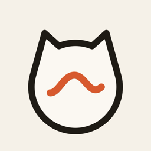

MeowlogPrivacy Policy
Last updated: October 12, 2026
Meowlog ("the app") listens for your cat's meows and keeps a journal of them. This policy explains what happens to your data.
Microphone and recordings
- The app uses the microphone only while you have tapped Listen. Audio is analysed on your device using Apple's built-in sound recognition.
- Short clips of detected meows, their pitch measurements and the labels you choose are saved only on your device. They are never uploaded to us or to anyone else.
- Deleting the app deletes all recordings and journal entries.
Information we collect
We do not run servers for the app, do not require an account, and do not collect personal information.
Advertising
The app shows ads from Google AdMob. AdMob may collect device identifiers (such as the advertising identifier), approximate location derived from IP address, and ad interaction data to serve and measure ads. On iOS you are asked through App Tracking Transparency whether ads may be personalised; if you decline, only non-personalised ads are requested. In the EEA, UK and Switzerland you are asked for consent through Google's consent form. See How Google uses information from sites or apps that use its services.
Children
The app is not directed at children under 13.
Changes
We may update this policy; changes will appear on this page with a new date.